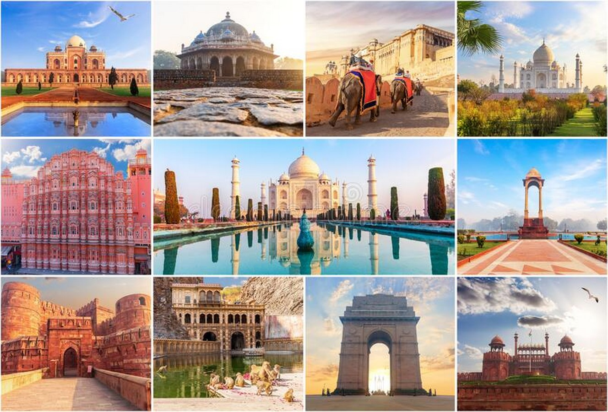
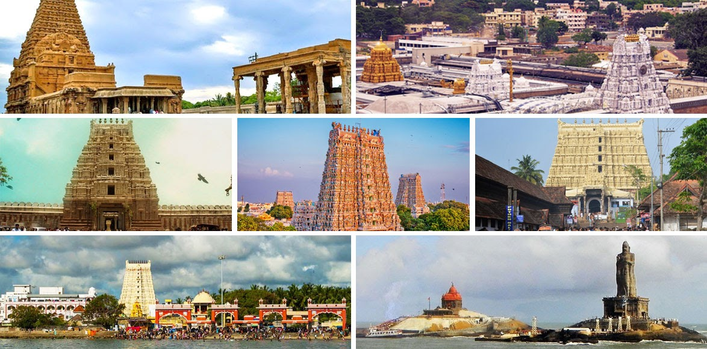
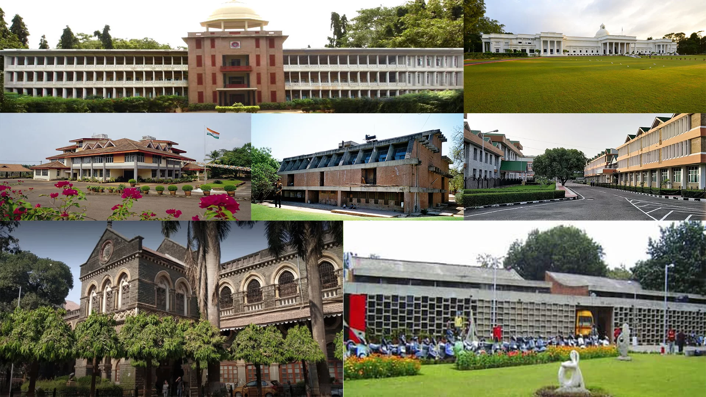
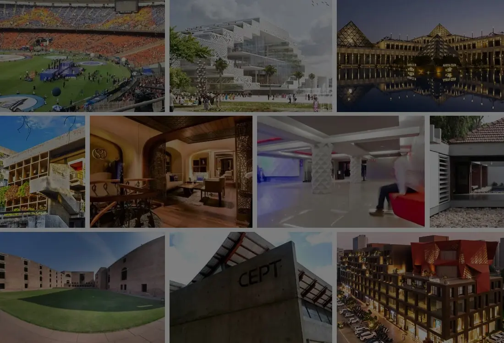
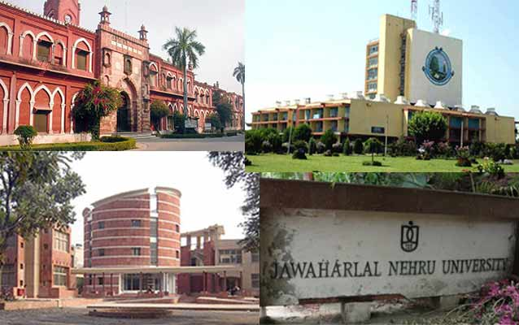

Explore the Diversity of Indian Architecture
North Indian architecture is known for its grandeur and intricate designs. The region has a rich history of architectural styles that have evolved over centuries, influenced by various dynasties and cultures. The use of red sandstone and marble is prominent in many structures, and the architecture often features elaborate carvings and detailed ornamentation.
South Indian architecture is renowned for its temple architecture, which is characterized by towering gopurams (gateway towers) and intricate sculptures. The temples are often built using granite and feature detailed carvings that depict various deities and mythological scenes. The architecture reflects the region's rich cultural heritage and religious traditions.
East Indian architecture is known for its unique temple styles, particularly in the state of Odisha. The temples are often built with sandstone and feature intricate carvings and sculptures. The architecture reflects the region's rich cultural and religious heritage, with many temples dedicated to various Hindu deities.
West Indian architecture is characterized by its forts and palaces, built by various dynasties over the centuries. The Maratha architecture, in particular, is known for its robust and functional design, with structures built to withstand sieges and attacks. The use of locally available materials and the incorporation of intricate carvings and decorations are common features.
North-East Indian architecture is distinct and reflects the region's diverse cultural heritage. The architecture often features bamboo and wood as primary materials, with structures designed to blend with the natural environment. The temples in the region are known for their unique shikhara (spire) style, with conical roofs and intricate woodwork.
